Name : Rishabh Sarswa Roll no : 19UELE8030 Year : 2nd SEM : 4th Session : 2019-20 Electrcal Workshop Semester 4 INDEX Experiment : 1 Download(PDF) Experiment : 2 Download(PDF) Experiment : 3 Download(PDF) Experiment : 4 Download(PDF) Experiment : 5 Download(PDF) Experiment : 6 Download(PDF) Experiment : 7 Download(PDF) Experiment : 8 Download(PDF) Experiment : 9 Download(PDF)
################################################################################################## ################################################################################################## INDEX EXP : 1 ################################################################################################## ##################################################################################################
Name : Rishabh Sarswa Rollno : 19UELE8030 Experiment : 1 Object : To study about the switch board and wiring of various appliances and also draw a circuit diagram of switch board containing fan, fan regulator tubelight,bulb and indicator. Apparatus Required : S No. Apparatus Name Rating Quantity 1 Wire Green 100m Black 100m Red 100m 2 Tubelight 40W 1 3 Fan with regulator 60W 1 4 Bulb 100W 1 5 Indicator 1 6 Socket outlet 1kW 1 7 Switch 100W 4 8 Switchboard 1 Theory : Normally domestic wiring used in houses, small commercial areas etc. Domestic supply is available on 230 to 240 volts and 15 amperes. Normally when construct the domestic wiring houses then the supply is taken from energy metre. Because supply is available on metre fan and distribution poles and the supply is distributing all over the appliances from metre by through distribution board is a device that directs electricity from one or more source.it is an assembly of one or more panels each of which contain switches that allows electricity to be directed. Normal distribution on board for switch board contains indicators ,switches etc. Some lines on the switch board we show a protection fuse. Indicators show that the line continuously and socket is useful to connect external appliances which uses plug. There are few types of socket 2 pin 2A socket and 2 pin 5A socket. 3 pin 5A, 3 pin 15A, 6 pin 25A and more extensive rating of sockets available in the market. Sockets are made up of bakelite and procline. Switch board also contains switches which is used for making circuit or not. Mostly switches are available in to a 5A, 10A ,15A and 25A rating. In switches internally screw and strips nut and bolts are made by brass and similarly in socket. Internal connection made on brass Bolt. When we construct domestic wiring we must follow the rules that are face is most taken as red wire similarly neutral wire is black in colour and Earth wire is green in colour. In socket Earth wire is more thicker than phase and neutral wire because it contains low resistance path. 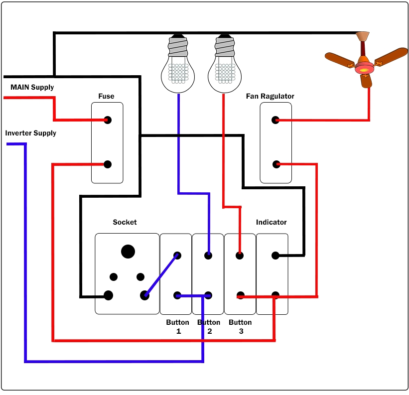 Procedure : For making domestic wiring for one switch board phase wire is connect with common copper wire for all the switches any type phase is available on the terminal of switch and the second wire is taken from the upper terminal of switch and it is direct connect with the appliances as phase wire outlet wire of appliances is called neutral. It is the black wire that is neutral wire of the appliances is common. neutral wire projector at the indicators neutral terminal all terminal must be connect with the earth wire and Earth wire must be connected at a thing domestic wiring with on switch board is shown in figure. Result : Wiring of various appliances on switchboard successfully studied.
################################################################################################## ################################################################################################## INDEX EXP : 2 ################################################################################################## ##################################################################################################
Name : Rishabh Sarswa Rollno : 19UELE8030 Experiment : 2 Object : To study the construction working principle of the desert cooler of traditional cooler. Apparatus Required : S No. Apparatus Name Rating Quantity 1 Desert cooler 1 2 Test lamp 40 watt 1 3 Screw driver 1 4 Power supply 230V/50Hz -- Theory : Desert Cooler Desert coolers are based on the simple principle that when unsaturated air comes in contact with water, the water evaporates. In the process, the moisture content of air increases, while its temperature decreases. The resulting cold but moist air is used for providing cooling. Thus a desert cooler is a simple device, which consists of an arrangement for blowing dry and hot air over a wet surface and an arrangement for keeping the surface wet continuously. The cooler normally consists of a blower and a pump. Desert coolers are economical (both initial and running costs are low) and are effective in hot and dry areas. They are not effective in humid areas. Principle Of Working As the name implies , it is suitable for places where the humidity is quite low and temperature quite high. These conditions are in conformity with desert areas. Hence the coolers are called ‘Desert coolers’. The principle on which a desert cooler works is ‘ Evaporative cooling’. Evaporative cooling is a process in which sensible heat is removed and moisture added to the air. When air passes through a spray of water it gives up heat to water, some of the water evaporated and picks up heat from the air equivalent to its latent heat . The vapour thus formed are carried along in stream. In this way air is cooled and humidified. Contruction and working of a desert cooler 1 Blower/ Fan 2 Water circulating pump 3 Water wetted pads 4 Water tank 5 Float valve The water is filled in the sump of the cooler from water supply mains , the level of which is controlled by a float valve. A water pump lifts the water and supplies it at the top of the cooler to the water distribution system which consists of small branches of copper pipe or so equipped with orifices which deliver equal amount of water to the troughs which in turns supply water to the wetted pads. The water which drops back from the pads is recirculated. The pump may be made of brass , stainless steel or even plastic. The blower pulls the air through the wetted pads and deliver it to space to be cooled through an opening in the fourth side of the cabinet of desert cooler. The air which is sucked through the pads is cooled by the principle of evaporative cooling . The blower gives adequate velocity to the air before it is delivered to the spaces to be cooled. To have long life of the desert cooler and better performance , pads should be changed every year and holes for water distribution system should be cleaned. The tank should be cleaned just after the season and coated with corrosion resisting paint . Classification Fan in the vertical plane 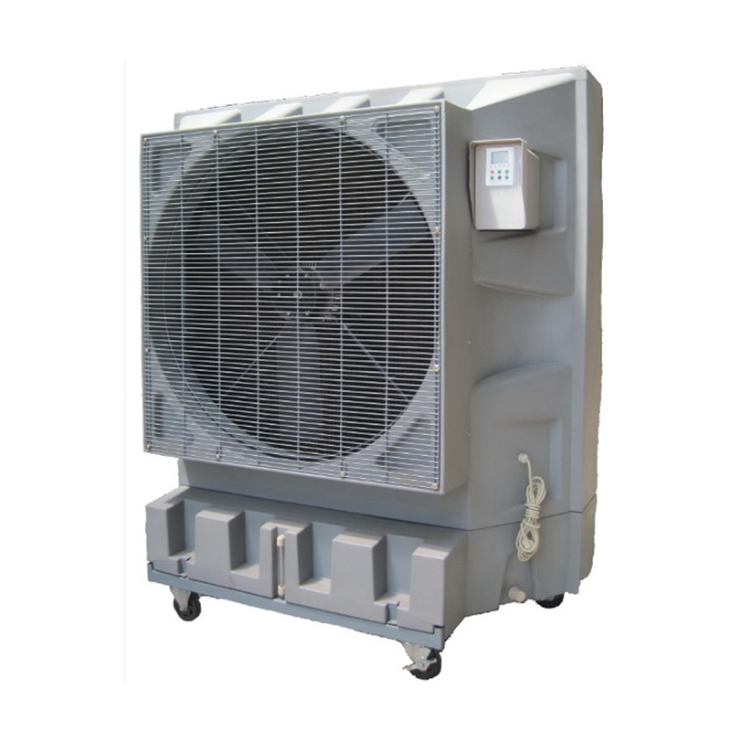 The arrangement of the components is shown in fig. there is a separate motor for the pump and fan so they can be used independently. The arrangement of the components in a box providing 3 pads. The pump , pumps the water from the bottom tank to the top and water trinkles through the holes provided on the top of tank and falls passing the pads to the bottom tank. Advantages of this type of cooler are: The pump cannot be started without starting the fan , which prevents unwanted running of pump. The system can be used as a cooler in hot summer and as a fan when cooling is not required. Fan in horizontal plane 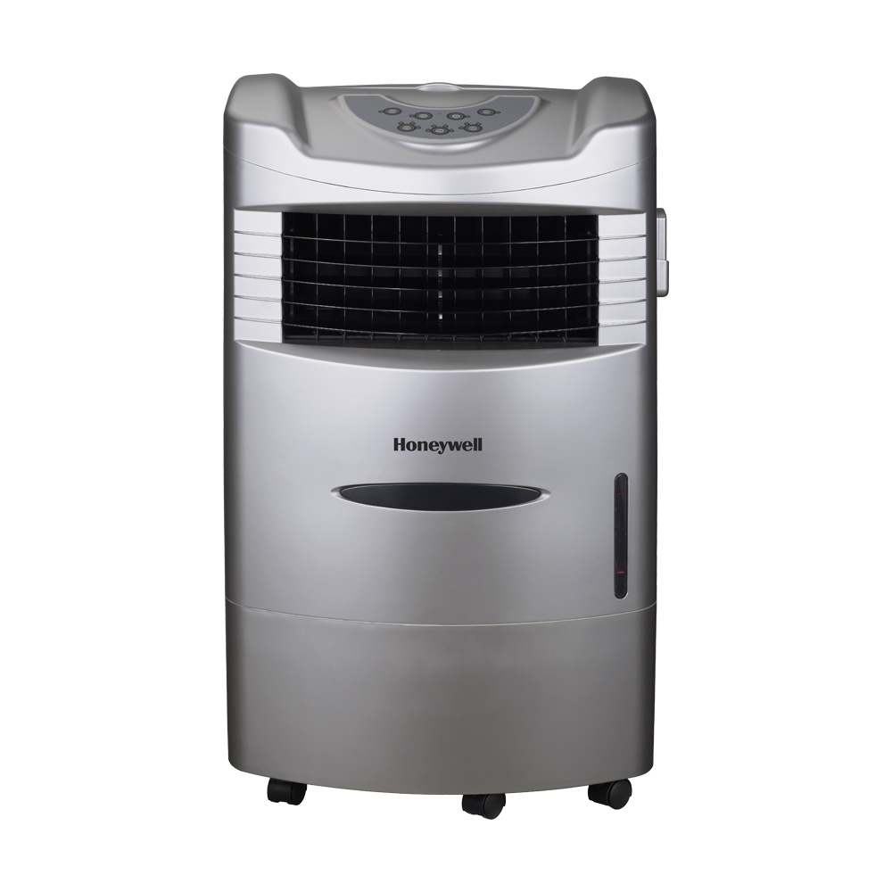 The wox type of the cooler falls under this class. The arrangement of the basic component is shown in fig. this differs from the previous one in fan arrangement. The pump and fan are mounted on same vertical shaft and run by a common motor. Hence the fan and pump cannot be operated seperately as in the previous arrangement. Advantages of this sytem are 4 cooling pads instead of 3 , hence cooling capacity is more. Noise is less than other coolers. Unique omni directional air flow provides better air distribution in the room. Cooler without water pump 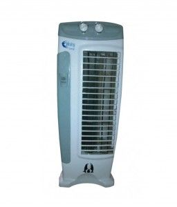 The majority of the users in india are facing three major problems: The coolers consume more electrical energy and hence not economical. The water pumps of the cooler are submerged in water tanks get damaged frequently . The khus pads need frequent replacement thereby causing inconveinence. To avoid such problems a new model known as ‘Quality desert cooler’ is developed. Advantages desert cooler Less expensive to install because estimated cost is half that of central refrigerated air conditioning Less expensive to operate because estimated cost of operation is ¼ that of refrigerated air Ease of maintanance because only two main parts fan &water pump which repair at low cost
################################################################################################## ################################################################################################## INDEX EXP : 3 ################################################################################################## ##################################################################################################
Name : Rishabh Sarswa Rollno : 19UELE8030 Experiment : 3 Object : To understand the construction principle of working , electrical circuit , dismounting , assembling , possible faults , testing method of following electrical appliance i.e. electrical iron 1 Non-automatic 2 Automatic with wats Constraction : Sole Plate The sole plate is the thick, triangular-shaped slab of iron that forms the base over which the electric iron is built up. The bottom surface and edges are heavily chromium plated, to prevent it from rusting. The base plate should hold the iron pressure plate and cover plate in position. For this purpose we can see two or sometimes three studs in the base plate. These studs aid in holding the position of cover plate and pressure plate. Pressure Plate This plate is generally called the top plate as it follows the shape of sole plate. The pressure plate has some holes through which the studs form the base plate passes through. We should tighten the nuts on the studs in such a way that the pressure plate and sole plate are pressed tight against each other. In some iron the pressure plate is heavy and made of cast iron while in some other cases, it is a thin sheet of steel, about ¼ cm thick. In automatic type of electric iron, the pressure plate has a rectangular or circular hole for locating the thermostat. The Heating Element The heating element is present between the sole plate and pressure plate. It is pressed hard between the two plates. The heating element consists of nichrome wire wound around a sheet of mica. The two ends of the nichrome wire are connected to the contact strips. The contact strips are connected to the terminals of the iron. There are two reasons for which mica is chosen in the heating material. Mica is a very good insulating material. Besides that mica can also withstand very high temperatures. The entire assembly of mica sheet, nichrome wire and contact strips are riveted together resulting in a mechanically sound and robust construction. There is an asbestos sheet, which separates and thermally insulates the top plate from the heating element. The Cover Plate The cover plate is made of thin sheet of iron. It is placed on top of the base plate and it covers all the internal parts of the iron. The handle and connector are only attached to the cover plate. Handle The handle can be made either with wood or with plastic. The handle is attached to the cover plate with the aid of screws. Studs can also be used for this purpose. Pilot Lamp The pilot lamp is housed in the cover plate of the electric iron. One end of the pilot lamp is connected to supply, while the other end is connected to the heating element. A shunt resistance is provided across the pilot lamp which assists in providing a voltage drop. The shunt is designed to provide a voltage drop of 2-5 volts. Thermostat When it comes to an automatic electric iron, the thermostat is the most important item. It uses a bimetallic strip to operate the switch which is connected in series with the resistance (or) heating element. The bimetallic strip is a simple element which converts a temperature change into mechanical displacement. A bimetallic strip consists of two different metals bonded together. The two metals should have a different coefficient of expansion. If such a strip is heated, it starts to curve towards the metal having the lower co-efficient of expansion. On cooling, it straightens and comes back to the normal position. Now we might wonder why such an element is used in iron. What is the purpose of this element in an electric iron? The bimetallic strip is attached to a contact spring through small pins. The contact point between the strip and contact points remains closed. When the temperature rises significantly, the unusual expansion causes the strip to curve and the contact between strip and contact spring opens. Thus the supply to heating element is temporarily stopped (until the temperature goes down to normal). A special device called the cam is placed is placed near the contact spring, with which we specify the amount of curving of bimetallic strip required to separate the contact. Thus using bimetallic strip the temperature is kept constant within certain limits. Capacitor The thermostat helps in maintaining the temperature within limits. But frequent making and breaking of circuit damages the contact points and it may also result in interference with radio reception. To avoid this, a capacitor of certain range is connected across the two contact points. REPAIRING there are many problems that can come up with iron. The following are some of the common dry iron problems along with their possible solutions. Dry Iron not heating enough PROBLEM: One of the most common troubles with dry irons is iron not heating enough. The possible causes for this could be wrong thermostat setting, problem with electric connections, problem with the power switch etc. SOLUTION: Thus to resolve this problem, you first need to check if you have made all the connections properly and in accordance with the user manual. Check the power switch, the plug and the thermostat as well. The thermostat is that element of an iron which helps control the temperature and the mode. If it is set at the wrong temperature, in particular a lower one, then the iron may not heat enough. So make sure you turn it to a reasonably higher setting. Moreover, try changing the heating mode to see whether the heat increases. Dry iron not working PROBLEM: Not heating enough and not working altogether are different issues. One common problem that people face is dry iron not working. SOLUTION: If your dry iron is not working at all then in that case you need to check the power cord first. If the cord is broken or damaged in any way, then this could be a cause of the appliance not working at all. Also try changing the plug into another power outlet to check whether the issue is with the outlet or the iron. Some other reasons why your dry iron may not be working could be wrong iron setting for example auto-off setting, limescale deposits on the soleplate and others. Dirty sole plate PROBLEM: Any kind of iron can experience issues with the sole plate. Over a period of time and usage, a sole plate can get dirty and its holes can get clogged. This may affect its heating and overall performance. SOLUTION: It is thus important to clean and maintain the sole plate on a regular basis. For this, you must first remove any particles you see on the sole plate with your hand. After that, take a cloth, dampen it and put some salt on it. Now rub this cloth on the bottom of the iron to remove stains and marks. You can remove burn marks by directly sprinkling some oven cleaner and leave there for some time before washing with cold water. Iron sticking to clothes PROBLEM: Another common dry iron problem that you may experience is iron sticking to the clothes or fabric. This could be due to a burnt soleplate. What happens is that due to constant usage, some fabric tends to stick an burn and this can lead to a burnt soleplate. This may result in the fabric getting stuck to the deposits. SOLUTION: In this case, make sure you clean your soleplate properly. You can do so first making a paste of 1 tablespoon water and 2 tablespoon baking soda. Apply this to the soleplate and use it for wiping the iron clean, cleaning steam holes Precations at time of fixing 1 The surface of base plate and weight plats should be well smoothed with file and sand paper. 2 When asbestos sheet is used ,be careful to place it between the weight plate and the upper side of the element to avoid the dissipation of heat to upper side of element. 3 There should be no gap between pressure plate and sole plate otherwise the element will be damaged very losses . 4 Fitting should be tight enough. Precations at time of testing 1 Do the in series of the supply and check also the supply before testing. 2 At the time of DC supply unless you are sure that there is no defect in the iron. Result Iron is successfully studied.
################################################################################################## ################################################################################################## INDEX EXP : 4 ################################################################################################## ##################################################################################################
Name : Rishabh Sarswa Rollno : 19UELE8030 Experiment : 4 Object : To Study electric immersion heater. Theory : 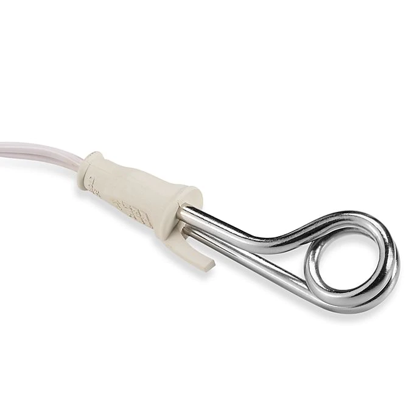 Construction of electric immersion heater The main parts are Heating element Outer frame Heating Heating element The heating element is made up of Nichrome wire which produces heat while giving electric supply. Its melting point is about 4200 o C. The coil type heating element is normally used in this heater. Outer frame The outer frame is made up of chromed iron brass pipe in which a heating element is placed. Inside wall of the pipe is coated with magnesium oxide, which act as insulation, so that the heating element may not touch the pipe. The top portion of the outer frame is made up of bakelite insulator. The ends of the heating element coils are connected at the points called as a terminal which is connected to the power chord. The scale is also provided to indicate the water lever to be maintained. Operation To use immersion water heater, one simply fills a bucket of water and places the immersion rod into the bucket either directly or with an aid like a clothes hanger. Then connect the plug into the socket and switch ON. As the supply is given, the heating element gets heated and is transferred to the water. So water gets heated. 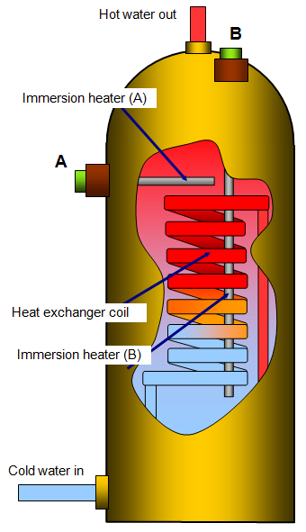 Testing of instrument immersion heater Preface the series testing leads to test the water heater for open close shot and Earth for leakage test by connecting the two end of testing lead to the terminal of plug top of the water heater if the lamp does not give light .it makes these is an open circuit i.e breaking of electric wire inside the body of water heater. if the left gives a bright light it mean those is short circuit i.e wire and at the terminal of both wires in the cord leaking. if the lamp glow simly it mean the element of the water it is a working order and it is known a closed circuit now to perform the test for earth fault connected one end of the test lead to one terminal of plug and top and another to the metal part of body of the water heater if the lamp glows it means the insulation inside the body is leaking from somewhere which is known as a leakage fault. Precation Without immersing the water heater in water, supply cannot be given. One should not touch the immersion rod when supply is ON. Before removing the immersion rod from water it should be disconnect from the plug socket. The water filled bucket should not be touched while the supply is ON. Except water no other liquid substance should be heated by immersion heater. Result These we have studied about the immersion water heater and also we have tested the water heater.
################################################################################################## ################################################################################################## INDEX EXP : 5 ################################################################################################## ##################################################################################################
Name : Rishabh Sarswa Rollno : 19UELE8030 Experiment : 5 Object : To understand the construction , principle of working, electrical circuit, dismantling, assembling , possible faults testing methods of electrical appliances. Roomheater Heat convertor Theory : Room heater 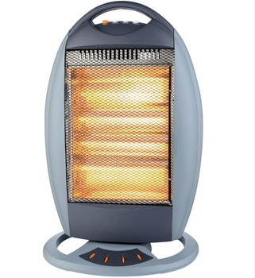 Parts of electric heater 1 Metal body of heater made of cast iron or casted aluminium sheet 2 Heater plate made of China clay or porcelain or plaster of paris generaly very nice between 5to10th india meter depending upon the power of the heating element. 3 Element made of round nichrome wire to to move the element of 750-1000 watt having the length of about 40inch 4 Terminals with nut sand washers 5 Porcelain beds for insulating purpose 6 An iron strip to support the heater plate 7 Nuts,bolts and washers to tight the heater plate 8 3 or 4 iron strips riveted with the heater body for tripod stand 9 Supply cord ,plug and connect to give supply to element Construction The electric heater, mostly consists of metal body of thick iron sheet, heater platemadeof China clay or porcelain, heating element made of nichrome wire terminal housing in which the terminals are fitted with nut sand insulated with porcelain sheets .The ends of elements are insulated with porcelain braids each other.there is also one end plate which covers all the assembled parts of the electric heater . the metal body is supported withs tands made of iron sheet or bonite.The wooden handles are fixed on the side of the heater to make it portable for operation the wire select riccord with three pin plugand connection is required. The electric heaters mostly have 3 rivetted is on Strips or iron grades on the upper portion of the metal body which protect the heater plate and prevents the utensils from touching the element and save the operator from severe socks. Testing By connecting the two ends of the testing leads to the two terminals of heater , if the lamp does not glow it means there is an open circuit i.e. Breakage in the element or disconnecting of connecting wires or strips inside at the terminals are touching together .ifthe lamp glows dimly , now to perform the earth testing when end of testing leads to one terminal of the another wires of testing lead to the metal part of the heater.if the lamp glows it means there is an Earth fault i.e. any part of the element or connecting wires or strip is touching the metal part of the heater . If there is parking on the body it means there is leakage i.e. insulating material is leaking The Other faults maybe in Cord or in plug top or in the connection i.e. breakage or disconnection of wires ends. Heat converter This consists of capacitor start motor on parameter capacitor motor along with the blades fitted on the shaft of the motor which through air out of the converter heating element is also arranged in it with the help of which is the air is heated and heat the room the heating element of motor is operated with operates switch and regulation it is used for cooling and heating the room. The fan is arranged with tangential flow system to throw equal share in all direction in the room to warm it very soon . this is very useful because it serves two purposes i.e. cools the room and warms the room. Result Construction, working principle testing possible faults of ordinary type room heater and heat converter have been studied successfully. Precaution 1 Avoid loose fitting of parts. 2 Insulate yourself on a dry wood before testing. 3 Heater body should be properly Earthed.
################################################################################################## ################################################################################################## INDEX EXP : 6 ################################################################################################## ##################################################################################################
Name : Rishabh Sarswa Rollno : 19UELE8030 Experiment : 6 Object : To understand the contraction principle of working circuit ,dismantlig , assembling , possible faults , testing methods of following appliances a). Ceiling Fan b). Table Fan A): Ceiling Fan Tools Required Insulator combinational players | 150 mm Screwdriver | 75mm Insulated nose plier | 150 mm Hammer 250 gram | Die set of spanners | Test lamp | 40 watt Material Required Mobile oil , grease , empire , sleeves Theory : Construction and working principle There may be of three main types of fan i.e 1) DC table fans or ceiling fans 2) AC table fan or ceiling fan 3) AC/DC table fan or ceiling fan An electric fan is simply an electric motor , fan rotating blades to throw the air DC fans are of DC series motor in which the rotating part armature is connected in series with stationary part i.e field coils when the current is given show the motor the magnetic field is set up in the field winding which experience a force in armature tending to move it at right angle to the field and the blades attached with the shaft of the armature displac the air. The same principle applies to the AC fans but these is some difference in the construction of AC fans is called stator or armature . In the case of AC fans mainly two types of single phase motors . These all types of motor work on the principle of inductor type motor In case of AC / DC fan universal motor are used in which the wound armature and field winding are connected in series which work on the principle of electric motor The speed fan are controlled by the speed of regulators. The regulators is wound with ewake wire and consists of a number of resistance in steps and the fans works on the speed which we require. Main components of AC cooling Fans Bobin Shackle Top canopy Bottom canopy Bolt to hold canopy Terminals conection Capacity housing Hanging rod or suspension rod Split pib Capacitor Upper cover Back cover Head cover Shank Blades Motor (1/50Hz)(stator & rotor) Decreasing cup Speed regulation 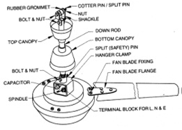 Types of tests : Continiuity and short circuit test on running windings or main winding. 1) If lamp glow dim it show continuity. 2) If lamp does not give light means open circuit 3) If the glows bright represents a shot circuit Result Hence, we stuidied about the constraction, principle of circuit, testing methods of Ceiling fans. Precautions 1) Test main winding, auxilary winding and capacitor seperatly. 2) If there is short or open circuit fault in more than one coil , then disconnect each coil and test them seperatly . B): Table fan Material and tools required Insulated combination pliers | 150 mm Screwdriver | 75mm Insulated nose plier | 150 mm Mallet | P/E set of spanners | Test lamp | | Mobile oil | Empire | Sleeves | Sandpaper | Piece of clothes | Theory : Construction and working principle Main components of table fan are following Metal body made of cast iron Stator made of lamination on its cores Stator winding (running starting winding of enamelled or aluminium wires) Rotor (symbol with copper birds and crest under hydraulic pressure with iron course in short circuited on both sides) Front side and back sides are cover made of cast iron with bushes a ball bearing Back canopy Oscillating gearbox Front canopy Stand and base Discover and end plate Oscillating rod and knob Regulator and knob Condenser Blades Front and back wire guard for safety Nut bolt washers handle and other insulating material according to requirements Supply cord 3 pin plug 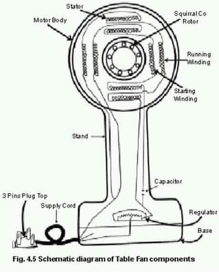 Types of tests : Continiuity and short circuit test on running windings or main winding. 1) If lamp glow dim it show continuity. 2) If lamp does not give light means open circuit 3) If the glows bright represents a shot circuit Result Hence, we stuidied about the constraction, principle of circuit, testing methods of Table fans. Precautions Do not test in series supply Don't oil more and when the fan is molten do not touch it Fan should be Earth properly All the time of overheating and repairing the all parts should be saved from damage Avoid scratches
################################################################################################## ################################################################################################## INDEX EXP : 7 ################################################################################################## ##################################################################################################
Name : Rishabh Sarswa Rollno : 19UELE8030 Experiment : 7 Object : To study the constructional principle of working electrical circuits and possible faults of following electrical appliances 1 Sandwich Toaster 2 Pop-up Toaster Apparatus required: Insulated combination pliers (150 mm), Screwdriver (150mm), Connectors, Insulated nose pliers (150mm), Test lamp with testing leads of 2m each, Insulating material mica pieces, Porcelain beads porcelain cleats-flat and Round as per requirement. Theory : These are of two types-> Non-automatic and automatic and are manufactured for testing the two slices. The automatic toasters consist of automatic service, controlling the testing and bread rising mechanism. When the testing is complete, the automation by a heating element controlled by a timer switch when the bimetal strip is overheated. It bends to a certain extent and breaks the circuit through a timer switch. 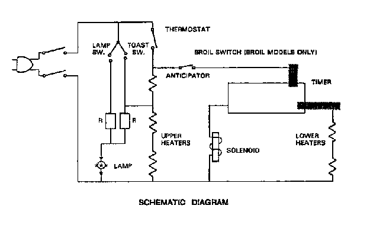 Possible Faults : 1) Open Circuit: - Means breakage in the element or burnt element, disconnection of elements ends at the terminals, breakage of wires in the plug top or connector. 2) Short Circuit: - Means touching of elements ends together, leakage of current due to broken clots. 3) Earth Fault: - Means any part of the element or elements ends touching the metal part of body of the toasters. 4) Broken cleats, broken beads, broken plug top or connector old mica comes under the other faults. Result : Sandwich toaster and Pop up toaster have been studied successfully. Precautions : 1) Insulate yourself on the dry wood at the time of testing. 2) Do the testing in series of the supply to avoid the risk of failure of supply. 3) Never connect direct supply unless we are sure that there is no fault in the toaster to avoid the risk of failure of supply.
################################################################################################## ################################################################################################## INDEX EXP : 8 ################################################################################################## ##################################################################################################
Name : Rishabh Sarswa Rollno : 19UELE8030 Experiment : 8 Object : To study the construction working principle of the hair Dryers Apparatus required: Hair Drier, Test lamp (40 watt), Screw driver, Power supply (single phase, 230 volt, 50Hz A.C.) etc. Theory : Function We are all very familiar with the daily routine; we wash our hair and then automatically pick up the hairdryer, flip the switch and there is the hot air to dry quickly and let us get on with the day. There are good reasons for people to dry their hair with a hairdryer, going out with wet hair especially in the winter can be bad for our health, and lead to catching colds and chills. A hair dryer also called blow dryer is an electrical device which can be used for styling and drying the hair by speeding up the evaporation of water from the hair’s surface. 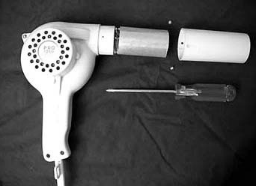 Types of Hair Dryer 1) Portable type hair dryer ii. 2) Saloon (Bonnet) type hair dryer Both the hair dryers supply hot air to dry the wet hair on the common principle of blowers with a heating element. A Bonnet type hair dryer model is shown in Figure 1 Constructional parts of Hair Dryer A hair dryer needs only two parts to generate the blast of hot air that dries the hair 1) simple motor-driven fan 2) heating element But in addition to above parts, most basic models will have two switches, one to turn them on and off and one to control the rate of airflow. Some models have an extra switch, called thermostat switch, used to regulate the temperature of the airflow. The exploded view of Bonnet type Hair dryer is shown in Figure 2 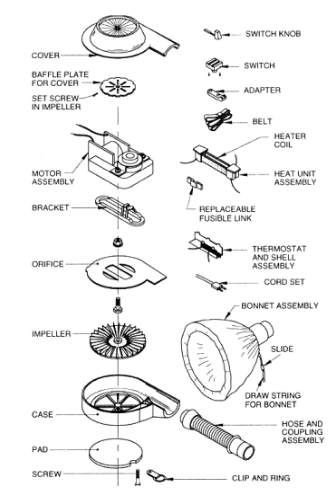 Motor driven fan The fan should probably be called a blower; the blade is shaped like the impeller on a vacuum cleaner and mounted in a housing which is connected to the outlet duct. Most motors are of single speed, shaded pole motors particularly in the smaller models. Some of the larger and more elaborate types have multiple speed motors or solid state control units on Universal motor. Early hair dryers put out only about 100 watts of heat. But nowadays hair dryers producing up to about 2,000 watts are available, drying hair considerably faster. The motors will be designed to work on 230 V, 1-phase, 50 Hz AC supply. The small black fan sits atop the motor as shown in Fig 13.9. The motor spins the fan. Air is drawn in through the openings on the side of the hair dryer. Heating element The heating element in most hair dryers is a bare, coiled nichrome wire that’s wrapped around insulating mica boards as shown in Fig. 4 Nichrome wire is an alloy of two metals, nickel and chromium. This alloy is used in heating elements in a number of household products, from curling irons to toasters. Nichrome wire has two features that make it a good producer of heat 1) It’s a poor conductor of electricity compared to something like copper wire. This gives the alloy enough resistance to get hot from all of the current flowing into it. 2) It doesn’t oxidize when heated. Other metals like iron rust pretty quickly at the temperatures used in toasters and hair dryers. The heating element is of the open wire type, wound on thin mica insulating board. Something seen more often these days are hair dryers with a ceramic coating on the heating element. Coming in a variety of different configurations, ceramic-coated heating elements are said to heat more evenly and effectively. It’s also popular to infuse the ceramic with materials such as crushed tourmaline, which is said to support the creation of ions and ideal heat flow.. The majority of hair dryers seem to use a three-section heating element (low, medium and high heating element) controlled by a selector switch. 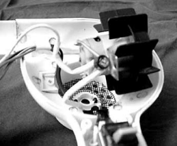 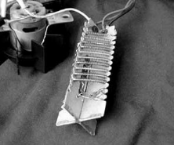 Thermostat Switch Each heating element has special thermostat strip mounted near the air nozzle which senses the temperature of the air flow. The thermostat switch is normally closed and is open if the hot air blown outside the heated circuit becomes too hot. A fuse may be found connected in series between the temperature control switch and the heater element. Selector switch: As the majority of hair dryers seem to use a three-section heating element (low, medium and high heating element) controlled by a selector switch, the switch will have three positions – low, medium and high to select the heating element as per the requirement. The selector switch will always be connected to the motor and then to the heater circuit so that the heating element cannot be turned on unless the motor is running. The diagram showing electrical connection of motor, selector switch and heating element are shown in Fig. 5. 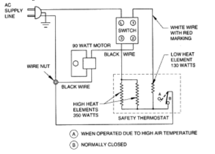 Working of Hair Dryer The working of Hair dryer is much simpler and most of its mechanisms revolve around its fan. When the dryer is switched on, the electricity moves to the windings of the motor of the fan. And here the electrical energy is transformed to kinetic energy as it provides momentum to the fan. The motor and the attached fan both spin. The centrifugal movement of the fan blades draws air in through the small round air inlets in the side casing of the hair dryer. These holes are covered by a safety screen that prevents other objects (such as strands of your hair) from being sucked in as well. The airflow thus generated by the fan is forced through the heating element by the shape of the hair dryer casing. These coils are designed to get heated quickly using its electrical resistance and electric current. When the air initially enters the barrel, it is much cooler than the nichrome wire, so heat flows from the wire to the air, which becomes very hot. As the air is pushed along by the fan and convection, it is replaced by cooler air and the cycle is repeated.The hot air streams out the end of the barrel. The hot air thus emitted from a hair dryer increases the temperature of the air surrounding each strand of hair. Since warm air can contain more moisture than air at room temperature, more water can move from your hair into the air. Hair Dryer Safety The basic idea behind hair dryers is pretty simple, but producing one for mass consumption requires some hard thinking about safety features. Here are some other safety features hair dryers commonly have 1) Safety cut-off switch - Your scalp can be burned by temperatures more than 140 degrees Fahrenheit (approximately 60 degrees Celsius) To ensure that the air coming out of the barrel never nears this temperature, hair dryers have some type of heat sensor that trips the circuit and shuts off the motor when the temperature rises too much. This hair dryer and many others rely on a simple bimetallic strip as a cut-off switch. Fig.5 - Electrical wiring diagram of Hair dryer 2) Bimetallic strip - Made out of sheets of two metals, both expand when heated but at different rates. When the temperature rises inside the hair dryer, the strip heats up and bends because one metal sheet has grown larger than the other. When it reaches a certain point, it trips a switch that cuts off power to the hair dryer. 3) Thermal fuse - For further protection against overheating and catching fire, there is often a thermal fuse included in the heating element circuit. This fuse will blow and break the circuit if the temperature and current are excessively high. 4) Insulation - Without proper insulation, the outside of the hair dryer would become extremely hot to the touch. If you grabbed it by the barrel after using it, it might seriously burn your hand. To prevent this, hair dryers have a heat shield of insulating material that lines the plastic barrel. 5) Protective screens - When air is drawn into the hair dryer as the fan blades turn, other things outside the hair dryer are also pulled toward the air intake. This is why you’ll find a wire screen covering the air holes on either side of the dryer. After you’ve used a hair dryer for a while, you’ll find a large amount of lint building up on the outside of the screen. If this were to build up inside the hair dryer, it would be scorched by the heating element or might even clog the motor itself. Even with this screen in place, you’ll need to periodically pick lint off the screen. Too much lint can block the airflow into the dryer, and the hair dryer will overheat with less air carrying away the heat generated by the nichrome coil or other type of heating element. Newer hair dryers have incorporated some technology from the clothes dryer: a removable lint screen that’s easier to clean. 6) Front grill - The end of the barrel of a hair dryer is covered by a grill made out of material that can withstand the heat coming from the dryer. This screen makes it difficult for small children (or other especially inquisitive people) to stick their fingers or other objects down the barrel of the dryer, where they could be burned by contact with the heating element. Precautions : 1) Insulate yourself on the dry wood at the time of testing. 2) Do the testing in series of the supply to avoid the risk of failure of supply. 3) Never connect direct supply unless we are sure that there is no fault in the toaster to avoid the risk of failure of supply.
################################################################################################## ################################################################################################## INDEX EXP : 9 ################################################################################################## ##################################################################################################
Name : Rishabh Sarswa Rollno : 19UELE8030 Experiment : 9 Object : To understand the construction and working principle, possible faults, testing methods of electric mixers and grinders. Apparatus required : Electric mixer (single phase-AC), Screw driver, Test lamp (40 W) Theory : Mixer and Grinder is a kitchen appliances that facilitates task related with mixing and crushing the food. These electric machines are very much helpful as they save time and energy. There are number of attachment like blades, disc, jars etc. comes with these appliances to facilitate different uses to make the food more full of flavour and yummy. Construction Motor The motor used in mixer is Universal motor, which is nothing but Series motor having both armature and field. The special feature of this motor is that it can be operated both in AC and DC supply. The armature core is made of silicon steel alloy and laminated to avoid eddy current and hysteresis losses. This motor provides a very good torque and its speed is regulated either by tapped field coils or tapped resistance in series. The power rating of motor would be about 500 W, operates on 220/204 V, 50 Hz AC supply. The no load speed would be about 18000 rpm with a full load speed of about 10000 rpm. The motor is housed in base of mixer body. Blender and Grinder Normally each mixer is associated with 3 kinds of jar of different capacity. Blades Blades are made of good quality stainless steel and will therefore give high life. Each jar will have its own blades according to its purpose. Jars are designed to grind dry or wet substances. So it is advisable not to interchange the blades from one jar to other. 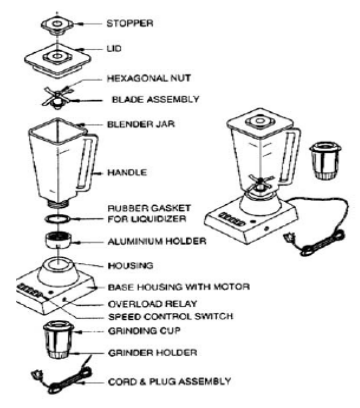 Speed control For speed control purpose, the tapped field coils are normally employed in mixer motor. The tapped field coils as shown in Fig.11.3, enables speed selection through a rotary switch provided in the mixer. Normally 3 speed levels (1, 2 and 3) will be provided in the mixer motor. By turning rotary switch clockwise, we can get speeds 1, 2 or 3 as desired mixer jars. For inching purpose, it is required to turn rotary switch anti-clockwise for a few seconds and release for momentary operation. (This is especially useful for wet grinding of chutneys, mincing meat, grating vegetables, crushing ice, etc.). Working: 1) Place the rubber sealing ring on the base of the blade assemble. Screw the blender in the assemble until tight. 2) Place the ingredients in the blender. 3) Place the lid on the blender. When the motor is running, only the centre stopper should be removed to add water for the free circulation of materials. 4) Switch on the motor. 5) If a material sticks to the sides of the Jar, stop the mixer and stir using stirrer. Then run again. 6) When the operation is complete, Switch OFF the mixer. Wait for few seconds till the motor stops completely and then remove the blender. 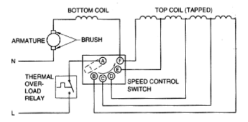 Precautions : 1) Do not run the motor without any load. 2) The motor should not be run for more than the specified time (prescribed by the manufacturer) 3) Do not operate unless Jar and Dome are in proper position. 4) Do not grind hot ingredients in the mixer. 5) Do not add solid ingredients, when the Motor is running. 6) Do not add big ice pieces while making cold drinks. Crush the ice and put into the blender. Faults and Remedies : 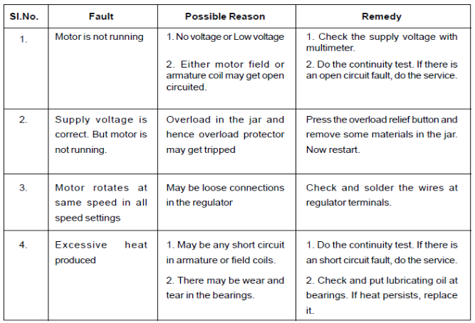
################################################################################################## ################################################################################################## INDEX THE END ################################################################################################## ##################################################################################################